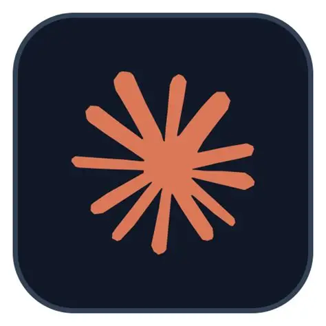
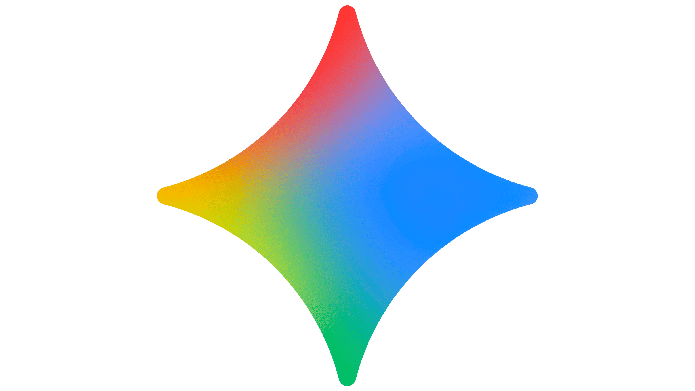
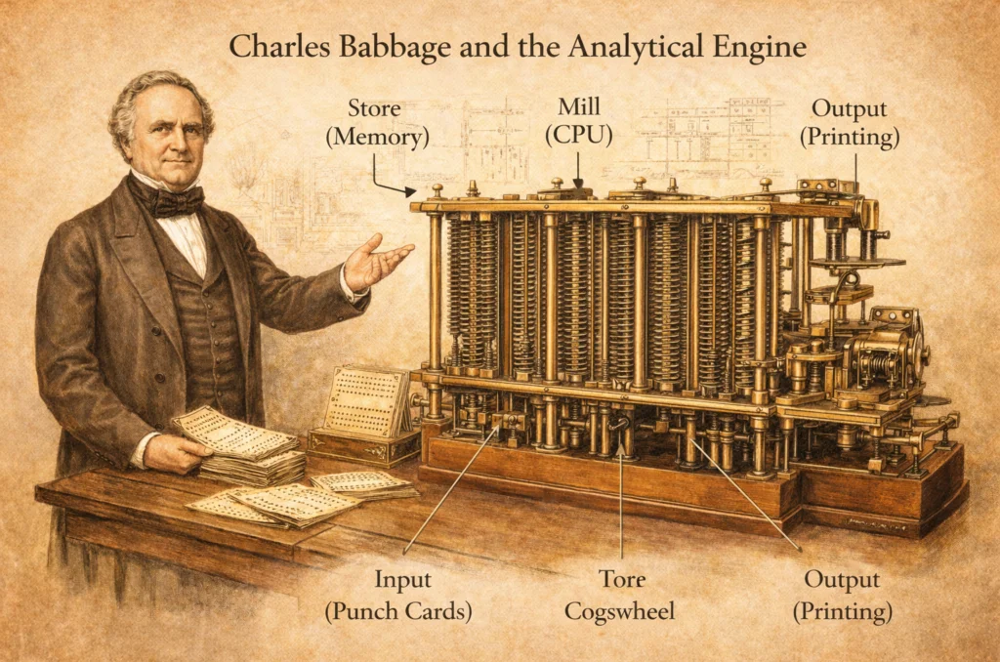

2022 até hoje — A era da IA generativa
Mais recentemente, ferramentas de Inteligência Artificial generativa — sistemas treinados com quantidades massivas de texto, imagem e código — passaram a ser capazes de escrever
textos coerentes, gerar imagens a partir de descrições, e até ajudar diretamente a escrever código de programação, sugerindo trechos inteiros ou corrigindo erros. Isso trouxe a
história completa de volta a um círculo interessante: a máquina que hoje ajuda o humano a escrever instruções lógicas.



Mudanças com o surgimento da IA generativa
Se Ada Lovelace foi a primeira pessoa a imaginar que uma máquina poderia seguir instruções lógicas escritas cuidadosamente por um humano, quase duzentos anos depois é a própria
máquina que passou a ajudar o humano a escrever essas instruções, invertendo parcialmente o papel que ela descreveu em suas anotações originais sobre a Máquina Analítica.

O impacto ainda está acontecendo em tempo real: ferramentas assim já fazem parte do dia a dia de programadores, estudantes e profissionais de diversas áreas, mudando a forma como o
trabalho intelectual é feito.
INICIO E ATUALIDADE:
este é o capítulo mais recente de uma história que começou com engrenagens de metal desenhadas por Charles Babbage no século XIX e que continua se reinventando em ritmo cada
vez mais acelerado, quase a cada ano que passa.
